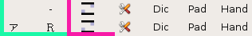
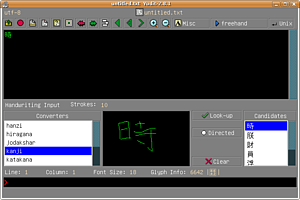

Schriftunterstützung
Dieser Artikel wurde für die folgenden Ubuntu-Versionen getestet:
Dieser Artikel ist größtenteils für alle Ubuntu-Versionen gültig.
Zum Verständnis dieses Artikels sind folgende Seiten hilfreich:
Es ist unter Ubuntu recht einfach, alternative Alphabete und Schriftzeichen, abweichend vom „normalen“ lateinischen Alphabet zu nutzen. zu nutzen. Grundsätzlich ist zu unterscheiden, ob man eine Sprache schreiben bzw. eingeben möchte, dessen Schrift sich nur aus einem begrenzten Zeichenvorrat zusammensetzt (Lateinisch, Griechisch, Hebräisch usw.), der auf eine normale Tastatur passen, oder ob man eine Schrift mit (viel) mehr Zeichen als Tasten auf der Tastatur schreiben möchte. Für letzteres sind die ostasiatischen Sprachen Chinesisch, Japanisch und Koreanisch beispielhaft.
Zeichentabelle¶
Für wenige Wörter oder einzelne Zeichen anderer Alphabete ist das Programm gucharmap geeignet. Das Programm ist in der Regel bereits installiert. Ansonsten installiert man das folgende Paket [1]:
gucharmap
 mit apturl
mit apturl
Paketliste zum Kopieren:
sudo apt-get install gucharmap
sudo aptitude install gucharmap
Ubuntu MATE bietet das Programm unter "Anwendungen -> Zubehör -> Zeichentabelle" an. Dort findet man fast alle Zeichen und Sonderzeichen aller Alphabete zum Einfügen in viele Programme. Damit die Zeichentabelle die Zeichen darstellen kann, müssen die entsprechenden Schriften installiert ein.
Eine weitere Möglichkeit ist das Kopieren von Schriftzeichen aus der Wikipedia, die zu praktisch jedem Schriftsystem Artikel bereithält.
Eingabemethoden¶
Bei längeren Texten ist diese Methode jedoch mühsam. Besser ist es, wenn dafür die Eingabemethode geändert wird. Für diesen Zweck stellt Ubuntu eine Vielzahl von Programmen zur Verfügung, die man je nach persönlicher Vorliebe nutzen kann. Die Konfiguration dieser Programme kann sehr komplex werden, weil sie tief in das System eingreifen. Es ist sinnvoll, die für die eigene Ubuntu-Version vorgeschlagene Eingabemethode zu nutzen, um unliebsame Seiteneffekte zu vermeiden.
Zusätzlich zur Eingabemethode kann man das Tastaturlayout ändern. Das muss man aber nicht, denn Ubuntu behandelt beide Einstellungen völlig unabhängig voneinander. Alternative Tastaturlayouts fügt man bei Ubuntu-Varianten mit einem Anwendungsmenü unter "System -> Tastatur -> Belegungen" hinzu. Dort findet man zudem unter "Optionen" den Punkt "Taste(n) zum Wechseln der Belegung", um die aktuelle Taste und/oder Tastenkombination in Erfahrung zu bringen, und gegebenenfalls zu ändern.
IBus¶
Seit Ubuntu 10.04 wird für die Unterstützung alternativer Schriften IBus  als Standard genutzt. Um IBus zu aktivieren, muss man unter "System -> Systemverwaltung -> Sprachunterstützung" über die Schaltfläche "Sprachen hinzufügen/entfernen" die gewünschten Sprachen wählen. Beim Punkt "System der Tastatureingabemethode" wählt man "ibus". Die Sprachunterstützung installiert eigenständig die benötigten Sprach- und Schrift-Pakete. Diese Auswahl an Sprachen/Schriften stellt der Rechner nun allen Nutzern zur Verfügung.
als Standard genutzt. Um IBus zu aktivieren, muss man unter "System -> Systemverwaltung -> Sprachunterstützung" über die Schaltfläche "Sprachen hinzufügen/entfernen" die gewünschten Sprachen wählen. Beim Punkt "System der Tastatureingabemethode" wählt man "ibus". Die Sprachunterstützung installiert eigenständig die benötigten Sprach- und Schrift-Pakete. Diese Auswahl an Sprachen/Schriften stellt der Rechner nun allen Nutzern zur Verfügung.
Anschließend legt der Nutzer selbst fest, welche dieser Sprachen/Schriften er benötigt. Zudem muss für das eigene Profil IBus aktivieren. Dazu wird an die Datei ~/.bashrc folgendes angehängt:
export GTK_IM_MODULE=ibus export XMODIFIERS=@im=ibus export QT_IM_MODULE=ibus
Spätestens nach einem erneuten Anmelden findet sich ein Symbol (eine Tastatur mit einem Globus) im oberen Panel. Hier wählt man beim Menupunkt "Einstellungen -> Eingabemethode2 die benötigten Sprachen/Schriften aus. Unter "Einstellungen -> Allgemein" sieht man die Tastenkombinationen, um auf andere Sprachen/Schriften umzuschalten.
SCIM¶
Bei Versionen vor Ubuntu 10.04 kam SCIM (Smart Common Input Method) zum Einsatz. Zuerst müssen die Sprachen installiert werden:
In der MATE-Oberfläche ist der Menüpunkt "System -> Einstellungen -> Sprachen" aufzurufen.
In dem erscheinenden Menü sind dann die gewünschten Sprachen auszuwählen, die unterstützt werden sollen.
Anschließend muss die Eingabemethode bekannt gegeben werden. Die empfohlene Methode, um SCIM entsprechend zu konfigurieren, ist die Verwendung des Kommandozeilentools im-switch (im = "Input Method"). Dazu muss der Name des verwendeten "locale" bekannt sein. Diesen findet man heraus, indem in einem Terminal [3] folgende Zeile eingegeben wird:
locale | grep LANG=
Die Antwort auf diese Eingabe sollte, je nach Spracheinstellung etwa wie folgt aussehen:
LANG=de_DE.UTF-8
Der relevante Teil in dieser Ausgabe, auf den es hier ankommt, ist de_DE (de steht für die Sprache Deutsch und DE für das Land, also Deutschland). Nun muss SCIM mitgeteilt werden, dass SCIM als Eingabemethode für dieses "locale" verwendet werden soll. Dies geschieht durch Eingabe des folgenden Befehls:
im-switch -z de_DE -s scim
Danach muss man sich nochmal ab- und wieder anmelden und SCIM sollte dann als Eingabemethode für alle Anwendungen in diesem "locale" zur Verfügung stehen. Die Umschaltung zwischen den Eingabesprachen, z.B. Deutsch und Chinesisch geschieht mit Hilfe der Tasten Strg + oder ⇧ + .
Es kann nicht schaden, wenn man die Umgebungsvariablen und den Start des SCIM-Dämons festlegt. Dies geschieht, indem man an das Ende der Datei ~/.bashrc folgendes einfügt:
export XMODIFIERS='@im=SCIM' export GTK_IM_MODULE="scim" export XIM_PROGRAM="scim -d" export QT_IM_MODULE="scim" scim -d
Problembehebung¶
Anwendungen lassen sich nicht starten/installieren¶
Nach der Installation von SCIM lassen sich manche GTK2+-Anwendungen, sofern sie aus einer externen Quelle stammen, nicht installieren oder starten (siehe hier ). Bei Aufruf der Anwendung in einem Terminal erscheint dann etwa folgende Fehlermeldung:
"*** glibc detected *** free(): invalid pointer 0x8265a30!"
Die Ursache einer solchen Fehlermeldung ist, dass das "SCIM Gtk IM"-Modul und die jeweilige Anwendung nicht binärkompatibel sind, wenn sie nicht mit derselben Version von gcc/glibc erstellt wurden. Dementsprechend tritt dieses Problem nur bei solchen Applikationen auf, die nicht aus der jeweiligen Ubuntu-Distribution stammen, sondern separat als Fremdpakete oder Fremdsoftware installiert wurden.
Eine optimale Lösung für dieses Problem wäre, die jeweilige Software auf dem System neu zu kompilieren, was jedoch bei manchen Anwendungen mangels Verfügbarkeit des Quellcodes leider nicht möglich ist. Die Lösung für das Problem besteht in diesen Fällen darin, die SCIM-Eingabemethode für die betreffenden Anwendungen zu deaktivieren. Das bedeutet natürlich, dass die Eingabe asiatischer Schriftzeichen bei diesen Anwendungen dann nicht möglich ist. Genau genommen handelt es sich hier also nicht um eine wirkliche Lösung, sondern nur um eine Umgehung (Workaround) des Problems.
Um die SCIM-Eingabemethode zu deaktivieren, muss dem Befehlsaufruf in einem Terminal einfach der Ausdruck GTK_IM_MODULE=xim vorangestellt werden:
GTK_IM_MODULE=xim <Name der Anwendung>
Damit sollte die betreffende Anwendung dann problemlos starten.
Das gleiche Problem kann auch bei KDE/Qt-Anwendungen (z.B. Skype) oder bei GTK-Anwendungen auftreten. Der Aufruf für diese Programme lautet dann für Qt-Anwendungsdialoge:
QT_IM_MODULE=xim <Name der Anwendung> # für KDE/Qt-Anwendungen GTK_IM_MODULE=gtk-im-context-xim <Name der Anwendung> # für GNOME/GTK-Anwendungen
Da derartige Programmaufrufe in einem Terminal auf die Dauer relativ umständlich und wenig nutzerfreundlich sind, empfiehlt es sich, eine entsprechende Zeile im Startskript für die jeweilige Anwendung zu ergänzen bzw. den Eintrag im Startmenü entsprechend anzupassen (siehe Skype).
Keine "Alt Gr" Taste in Java-Programmen¶
Unabhängig von der Java-Version kann es bei manchen Ubuntu-Versionen (212364) zu Problemen kommen, wenn man Zeichen eingeben will, für die gleichzeitig die Alt Gr Taste gedrückt werden muss. So ergibt Alt Gr + 8 z.B. nicht wie erwartet eine eckige Klammer, sondern einfach nur "8". Dies verursacht vor allem bei in Java geschriebenen IDEs wie Netbeans, BlueJ usw. große Probleme, da dort häufig Klammern gebraucht werden. Abhilfe schafft das Anlegen/Anpassen von zwei Dateien.
Abhängig von der gewählten Sprache, muss man die passende 'locale'-Variable in /etc/scim/global eintragen. Für deutsche Nutzer lautet diese de_DE.UTF-8 (lässt sich alternativ durch die Eingabe von locale im Terminal feststellen). Die Zeile /SupportedUnicodeLocales sollte anschließend so aussehen:
/SupportedUnicodeLocales de_DE.UTF-8,en_US.UTF-8
Wichtig ist hierbei, kein Leerzeichen zwischen dem Komma zu machen. Nach einem Neustart (des X-Servers) sollte die Tastatur auch in Java Programmen wie gewohnt funktionieren.
Weitere Methoden¶
vim¶
Der Editor vim kann ebenfalls UTF-8 und ist damit in der Lage, fast alle Schriftzeichen wiederzugeben. Zum Beispiel lassen sich mit vim die Tonhöhen in der chinesischen Pinyin-Lautschrift recht einfach eingeben.
UIM¶
Installation¶
Hinweis!
Zusätzliche Fremdquellen können das System gefährden.
Zuerst müssen die Paketquellen für die japanischen Ubuntu-Paketquellen freigeschaltet werden [2]:
deb http://archive.ubuntulinux.jp/ubuntu-ja UBUNTU-VERSION/ deb http://archive.ubuntulinux.jp/ubuntu-ja UBUNTU-VERSION-ja/
Die zusätzlichen Quellen sollten nach der Installation allerdings wieder entfernt werden, um Kompatibilitätsprobleme auszuschließen. Alternativ kann man auch die Pakete einzeln herunterladen und manuell installieren [7].
Nun die folgenden Pakete und ihre Abhängigkeiten installieren [1]:
pkg-config - Programm, um installierte Programme aufzulisten (falls nicht vorhanden)
uim - Das Universal Input Method-Programm
uim-anthy - Eine Eingabemethode für UIM
uim-applet-gnome- Das Applet für das GNOME-Panel
libuim-dev - Entwickler-Pakete
tomoe - Handschrifterkennung
libtomoe-gtk - Handschrifterkennung
libtomoe-gtk-dev- Handschrifterkennung
Als nächstes den aktuellen Tarball von uim-tomoe-gtk des Tomoe-Projekts herunterladen, entpacken, und kompilieren [5].
Konfiguration¶
Die Einrichtung erfolgt allein im Konfigurationsmenü von UIM, das nach erfolgreicher Installation unter "System -> Einstellungen -> Preference of UIM" zu finden sein sollte. Nach der ersten Installation sollten aber standardmäßig alle verfügbaren Eingabemethoden verfügbar sein. Das UIM-Applet sollte zur besseren Benutzung einem GNOME-Panel hinzugefügt werden [6]. Das sieht dann so aus, wenn es aktiv ist:

| Optionen der jeweiligen Sprache. Hier z.B. bei "Direct Input" keine ("-"), bei Japanisch Alphabet (hier "ア") und Keyboard (hier "Ｒ"). | |
| Sprachumstellungsdialog, für ganzen Desktop oder einzelne Programme. | |
| Werkzeug | Der Konfigurationsdialog. Derselbe wie in "System -> Einstellungen -> Preference of UIM" |
| Dict | Persönliches Wörterbuch für Anthy. |
| Pad | Eingabepad für japanische Zeichen. |
| Hand | Handschriftliche Eingabe für japanische Zeichen mittels Maus. |
Es kann nun nach Belieben in Chinesisch, Japanisch, Koreanisch oder Vietnamesisch getippt werden. IPA-Lautschrift geht mittels X-Sampa-Layout auch.
Tastaturbelegung¶
Deutschsprachige Computernutzer haben meist eine deutsche Tastatur mit deutscher Tastaturbelegung, mit der man erst mal keine Sonderzeichen anderer Sprachen oder Schriftzeichen anderer Alphabete eingeben kann. Es kann aber eine beliebige andere Tastaturbelegung, z.B. Tschechien, Iran, Israel, Russland, Äthiopien usw., eingestellt werden. Zusätzlich kann man sich zur Orientierung die entsprechenden Zeichen auf die Tastatur kleben. Das ist nützlich, wenn man ganze Texte in einer Fremdsprache mit vielen Sonderzeichen oder in einem anderen Alphabet schreiben möchte.
Dazu fügt man am besten erst mal im Panel den Tastaturindikator hinzu, damit man dann zwischen den Tastaturbelegungen hin und her schalten kann. Dazu mit der rechten Maustaste auf den Panel (Seitenbalken) gehen: "Zum Panel hinzufügen... -> Dienstprogramme -> "Tastaturindikator". Dann wählt man die Tastaturbelegung aus, mit der man schreiben möchte: "System -> Einstellungen -> Tastatur -> Belegungen". Mit "Hinzufügen..." wählt man die entsprechende Tastaturbelegung aus. Bis zu 4 Tastaturbelegungen können gleichzeitig gewählt werden.
Yudit (International)¶

Wer nur SCIM verwendet, wird eine grafische Eingabemethode vermissen. Abhilfe schafft ein international angelegter Editor: Yudit . Dieser unterstützt unter anderem einen so genannten "freehand"-Modus für die Eingabe asiatischer Kanjis.
Folgendes Paket muss installiert werden [1]:
yudit (universe)
mit apturl
Paketliste zum Kopieren:
sudo apt-get install yudit
sudo aptitude install yudit
Anschließend kann der Editor mit folgendem Befehl gestartet werden:
yudit
Als Erstes sollte man die Schriftart auf "Misc" umstellen. Mit dem Tastendruck F5 wird der Freihand-Modus (freehand) aktiviert. In der Auswahlliste schließlich "Kanji" auswählen, schon kann man in das schwarze Feld zeichnen (siehe Bild).
KanjiPad (Japanisch)¶
Für japanische Handschrift-Eingabe im "freehand-modus" gibt es auch das ältere KanjiPad . Folgendes Paket muss installiert werden [1]:
kanjipad (universe)
mit apturl
Paketliste zum Kopieren:
sudo apt-get install kanjipad
sudo aptitude install kanjipad
Nach einem Neustart kann das Programm mit folgendem Befehl gestartet werden:
kanjipad
Jben (Japanisch)¶
Jben ist ein japanischer Vokabeltrainer, der auch "handwriting-support" liefert. Der Quellcode muss von der Projektseite heruntergeladen, entpackt und kompiliert [5] werden. Vor dem Kompilieren müssen verschiedene Pakete installiert werden. Kompiliert wird das Programm anschließend mit (im Quellordner):
make
Anschließend muss
make download
ausgeführt werden, um die Wörterbücher nachzuladen. Zum Schluss wird mit
checkinstall
ein .deb-Paket erstellt und installiert [1].
Nabi (Koreanisch)¶
Neben SCIM gibt es noch einige weitere Eingabeeditoren für koreanische Zeichen. Da es zahlreiche Programme gibt, bei denen die Eingabe koreanischer Zeichen mit SCIM Schwierigkeiten macht, da es einen Konflikt zwischen der QT-Bibliothek und SCIM gibt, empfiehlt es sich, ruhig einmal einen anderen Eingabeeditor als SCIM auszuprobieren. Einer dieser Editoren, der wunderbar mit QT harmoniert, heißt Nabi (Schmetterling). Zuerst muss das Paket installiert werden:
nabi
mit apturl
Paketliste zum Kopieren:
sudo apt-get install nabi
sudo aptitude install nabi
Man konfiguriert Nabi als Standard-Eingabemethode für Koreanisch, indem man die Datei /etc/X11/xinit/xinput.d/ko_KR mit einem Editor [4] öffnet und folgenden Inhalt hineinkopiert:
XIM=nabi XIM_PROGRAM=/usr/bin/nabi XIM_ARGS= GTK_IM_MODULE=xim XMODIFIERS="@im=nabi"
Darstellungsprobleme¶
Schaut man sich in einem asiatischen Text die Schriftzeichen im Vergleich an, wird man wahrscheinlich feststellen, dass sie teilweise sehr uneinheitlich aussehen. Das liegt daran, dass das System in der Datei /etc/fonts/fonts.conf Schriftartentabellen in einer ungünstigen Reihenfolge nachschlägt, sodass es zu einer Vermischung der Schriftarten kommt.
Abhilfe schafft eine benutzerspezifische Konfigurationsdatei namens /etc/fonts/local.conf. Diese legt man an, falls es sie noch nicht gibt, und fügt diesen Inhalt ein (Editor mit Root-Rechten, [4]):
<?xml version="1.0"?>
<!DOCTYPE fontconfig SYSTEM "fonts.dtd">
<!-- /etc/fonts.conf file to configure system font access -->
<fontconfig>
<alias>
<family>serif</family>
<prefer>
<family>Bitstream Vera Serif</family>
<family>AR PL ShanHeiSun Uni</family>
</prefer>
</alias>
<alias>
<family>sans-serif</family>
<prefer>
<family>Bitstream Vera Sans</family>
<family>AR PL ShanHeiSun Uni</family>
</prefer>
</alias>
<alias>
<family>monospace</family>
<prefer>
<family>Bitstream Vera Sans Mono</family>
<family>AR PL ShanHeiSun Uni</family>
</prefer>
</alias>
</fontconfig>Hier kann man statt "AR PL ShanHeiSun Uni" auch eine andere Schriftart nehmen, die einem gefällt. Nach dem Abspeichern der Datei und einem Neustart des XServers sollte nun z.B. ein chinesischer Text schöner und gleichmäßiger aussehen als zuvor.
Schriftarten für Fremdsprachen¶
Unter Linux gibt es sehr viele Schriftarten, von denen leider sehr viele auch nichts taugen. Allgemein bzw. für Westeuropa empfehlenswerte Schriften sind im Artikel Schriftarten zu finden. Hier soll eine Liste mit empfehlenswerten Schriftarten für Fremdsprachen gegeben werden. Dazu zählen beispielsweise:
Koreanisch [ko]: Baekmuk* (Paket: ttf-baekmuk)
Tibetisch [bo]: Tibetan Machine Uni* (Paket: ttf-tmuni)
Schriften mit einem * sind nicht fachmännisch bewertet, daher keine 100-prozentige Empfehlung. Allgemein kann normale Sprachunterstützung mit dem Paket language-support-xx installiert werden, wobei xx für das Länderkürzel steht. Allerdings werden dort eventuell zu viele Sachen installiert, die man nicht braucht (Übersetzungen von Programmen, Eingabeeditoren usw.), wenn man beispielsweise nur fremdsprachigen Text lesen möchte.
Weitere schöne Schriften für Fremdsprachen und weiterführende Links findet man beim Projekt Unifont .
- Erstellt mit Inyoka
-
 2004 – 2017 ubuntuusers.de • Einige Rechte vorbehalten
2004 – 2017 ubuntuusers.de • Einige Rechte vorbehalten
Lizenz • Kontakt • Datenschutz • Impressum • Serverstatus -
Serverhousing gespendet von